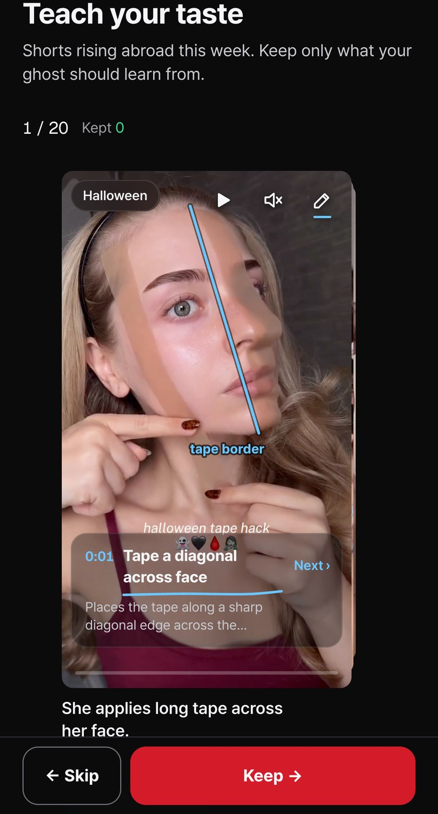
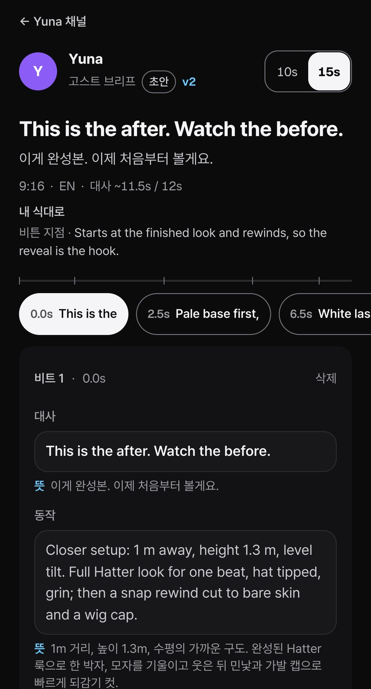
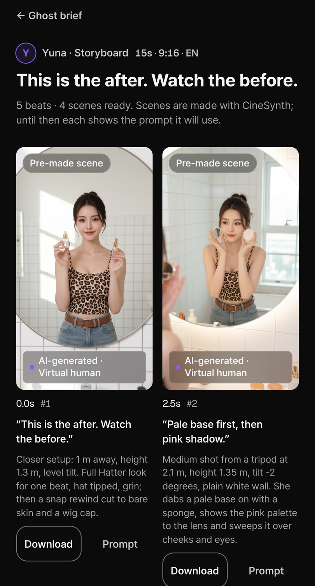
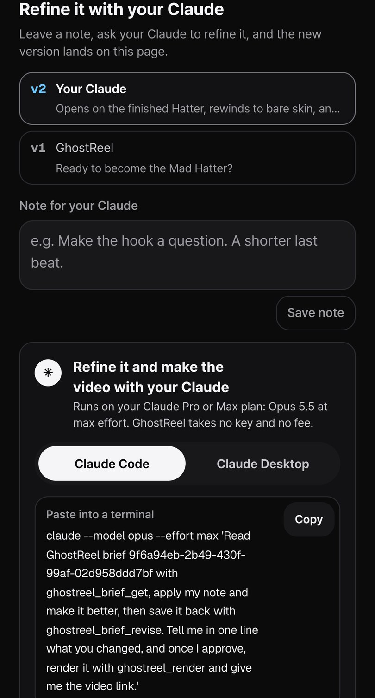
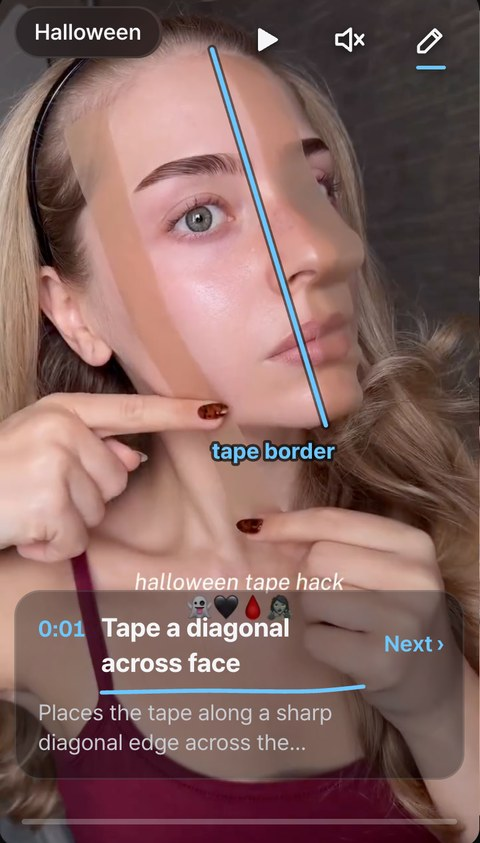
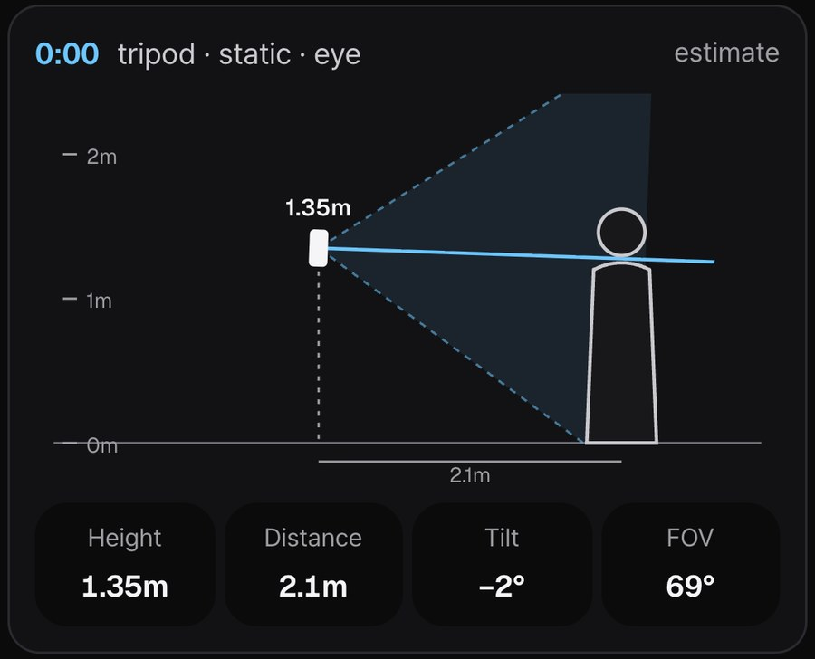

North star
Posts each creator approves per week. Ten minutes of taste a day becomes a channel that posts daily, in any language.
For the 10 million whose jobs go to AI
Pick the shorts you would keep. A twin creator, a virtual human, performs your next one in any language: no face, no camera. Your own Claude rewrites it over MCP, so every version comes back better.
On two engines we already run

This week's rising shorts, Halloween included. The coaching pencil draws each hit's mise-en-scène on the frame.

The ghost performs in English; you read Korean beside every line. Edit anything.

Approve, and CineSynth shoots it scene by scene, on the hit's own camera setups.

Leave a note. Opus 5.5 reads it over MCP and writes v2 to the same link.
Strategy
Frontier models get stronger every month. We don't race them. We give them what they lack: what goes viral, shot by shot. Every upgrade to Claude or GPT upgrades every GhostReel creator, and over MCP people bring their own AI: no model bill for us.


Shorti reads each hit: hook, beats, and where the phone stood. The coaching pencil draws it on the frame, for the ghost and for anyone who films for real. Next, inside POV smart glasses.
Your own Claude reads the brief and your note, then writes the next version back to the same link. Next, each post's results flow in, so your AI's memory learns your taste post by post: your craft compounds.
// GhostReel's MCP context: Shorti's camera read const { height, distance, tilt, fov } = context.camera[0]; // 1.35 m · 2.1 m · −2° · 69° const cam = new THREE.PerspectiveCamera(fov, 9/16); cam.position.set(0, height, distance); cam.rotation.x = deg(tilt); for (const b of brief.lines) timeline.at(b.t, b.say, b.do); // the model writes the rest, in code
Our MCP context (beats, camera setups, cues, lineage) is a shot list a model can execute. Today it directs CineSynth's virtual human; as Opus-class models grow, the same tools let them compose 2D and 3D shorts in pure code, like three.js.
Posts each creator approves per week. Ten minutes of taste a day becomes a channel that posts daily, in any language.
① US and English-speaking TikTok · Reels · Shorts: faceless side-income creators (first ghost: K-beauty for the US). ② POV smart-glasses creators: the pencil coaches the shot in the lens.
Bring your own AI: no inference bill for us, frontier quality for them. Revenue from render credits and seller deals, where the ghost wears the product.